Through my lens, photography becomes a means to freeze delicate moments that echo with emotion, authenticity, and connection. With my photography I aim to document fleeting expressions, nuanced details, and unspoken narratives that often escape casual observation. While I am most practiced in portrait photography, I am always looking for new ways to push myself in my processes and practice.
 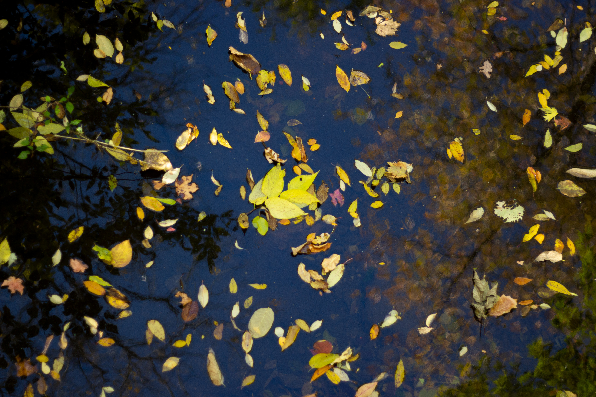
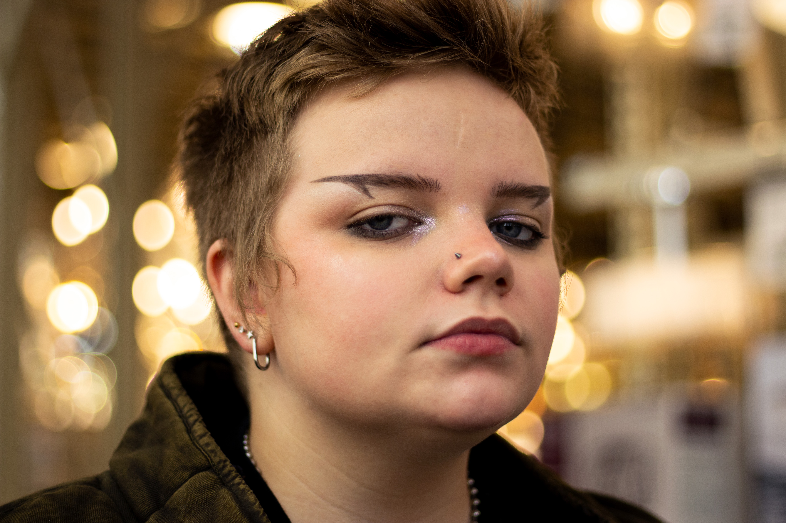
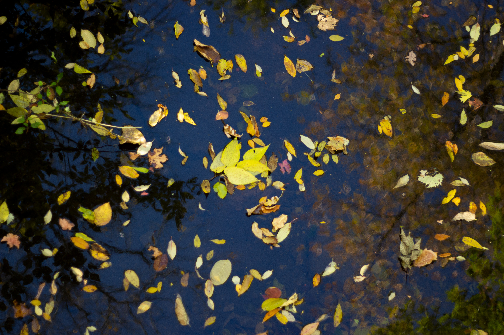
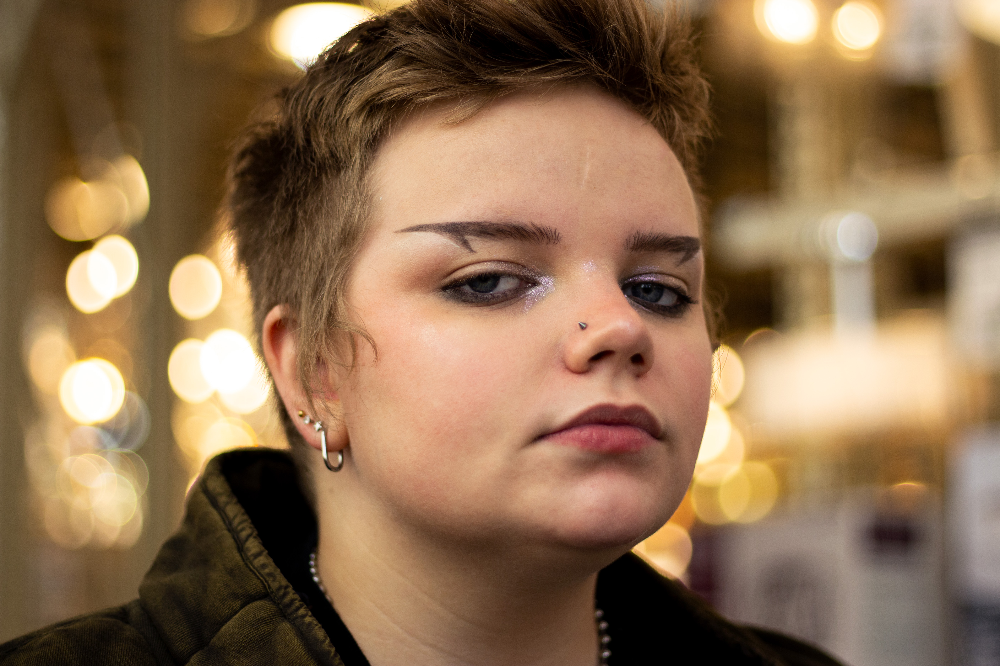

 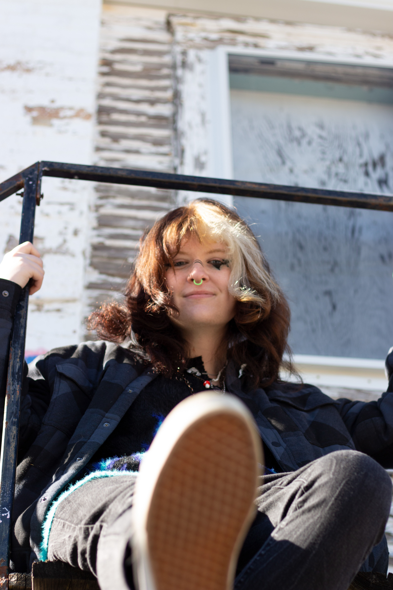
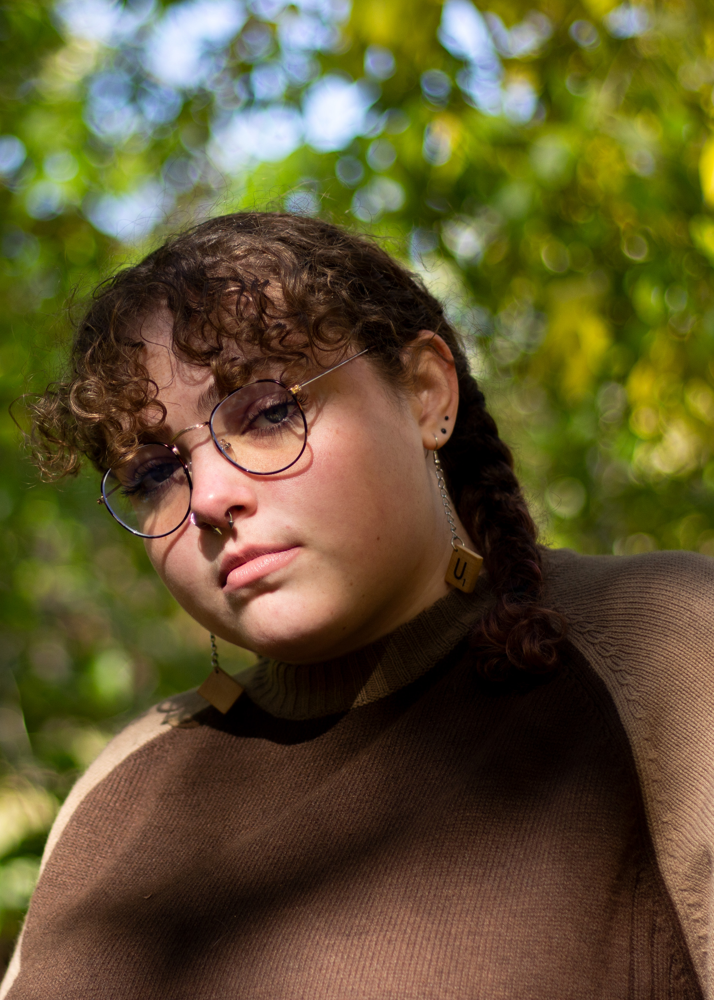
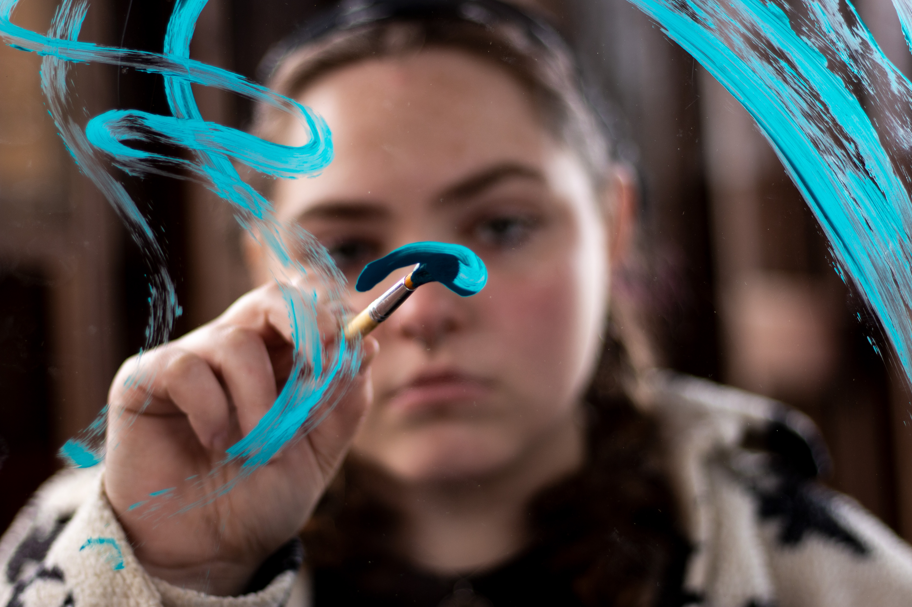
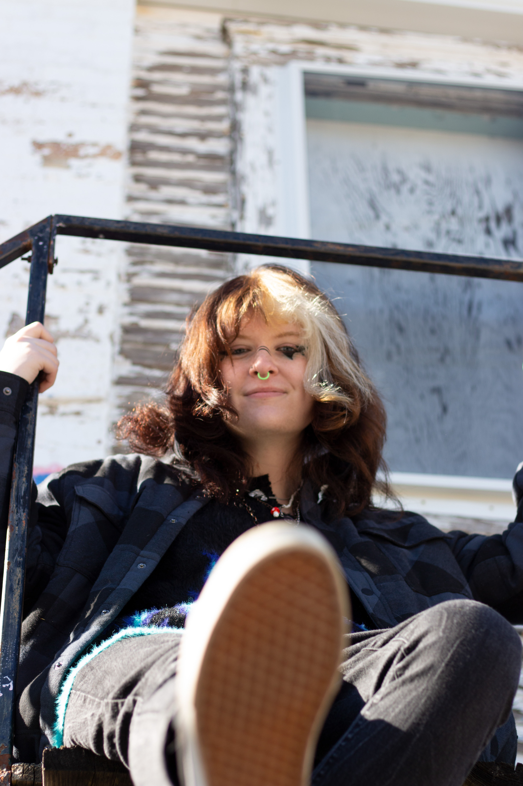
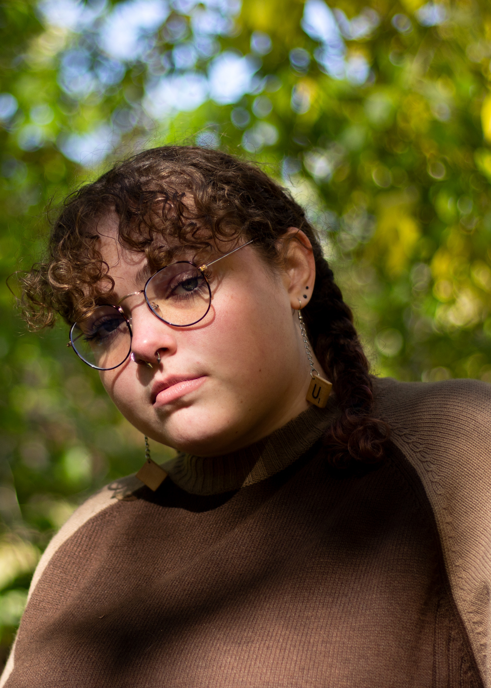
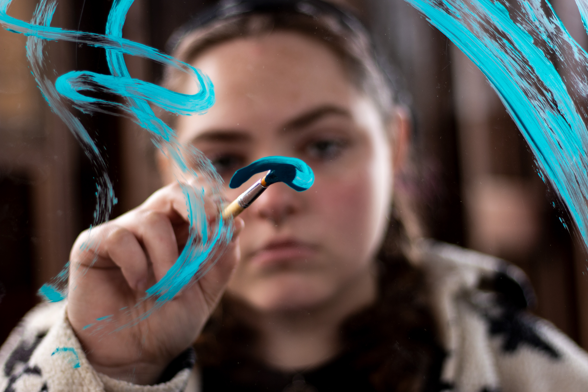


 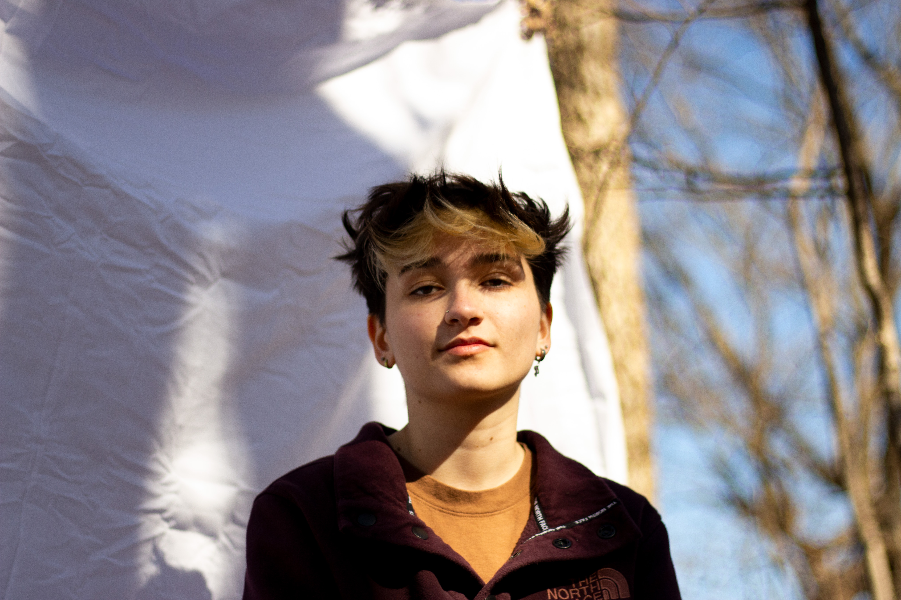
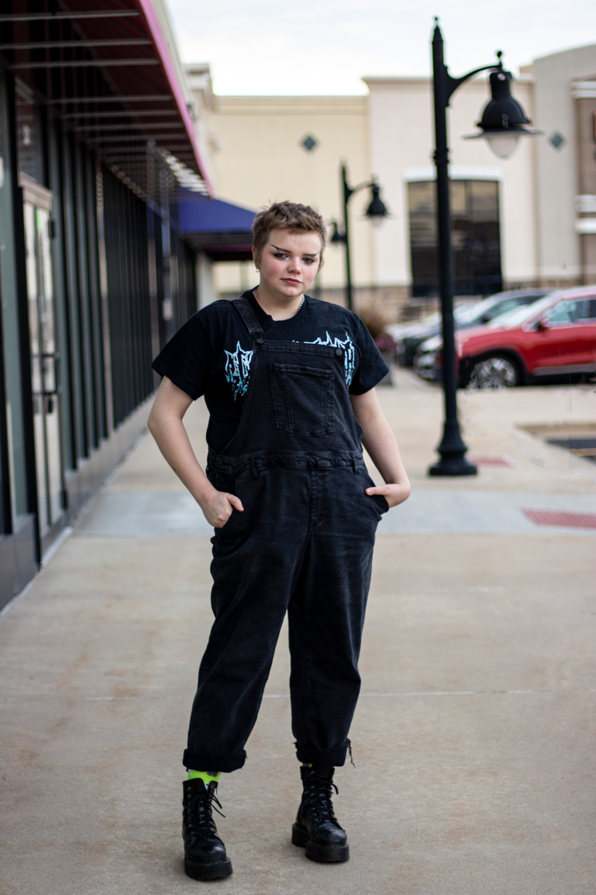
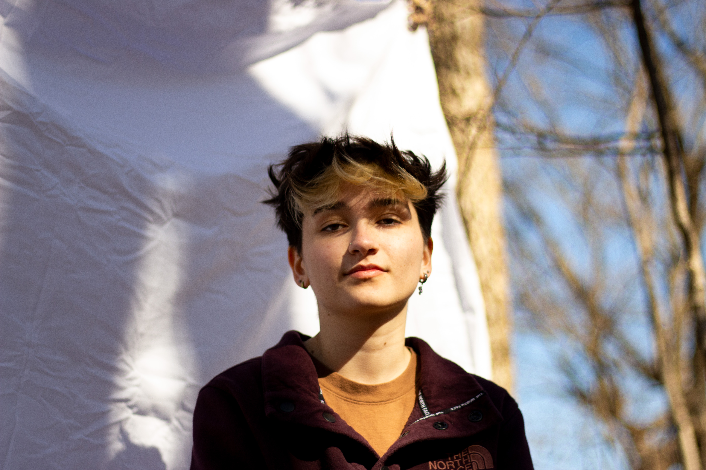
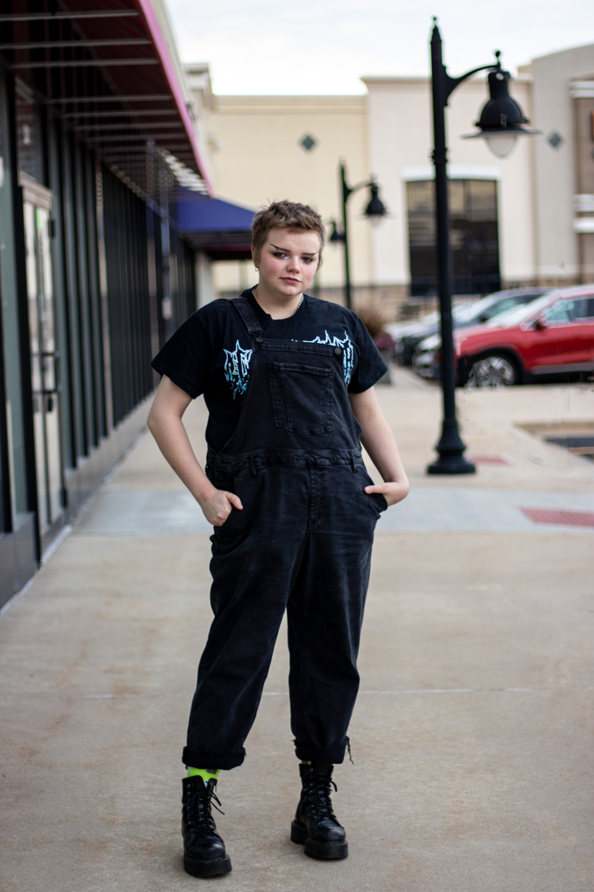